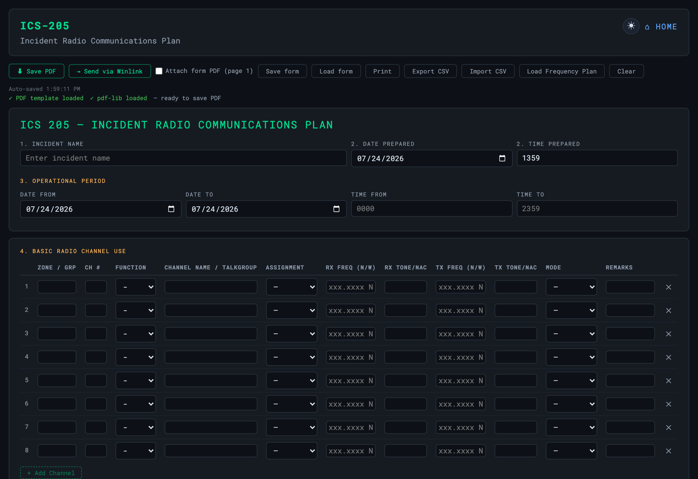
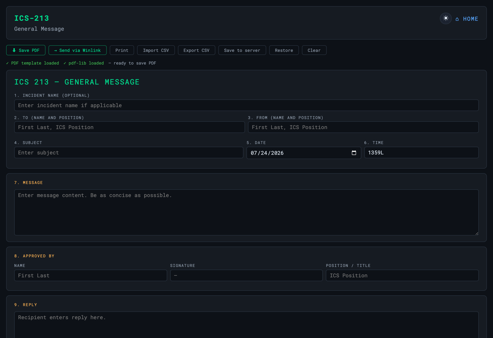
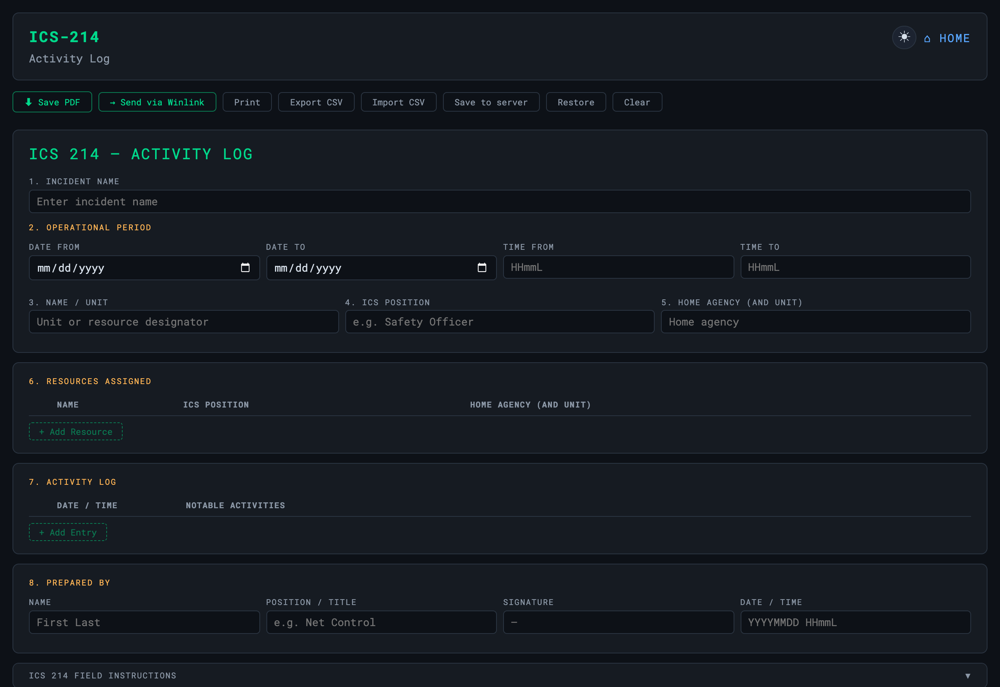
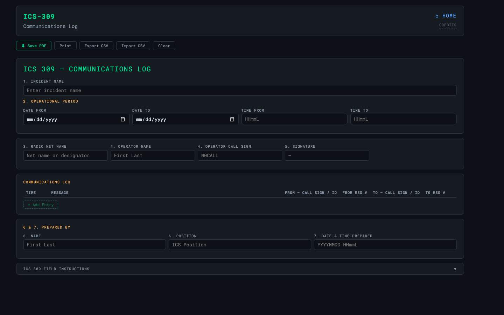

Forms & Reference
ICS Forms
ICS 205 / 213 / 214 / 309 on official FEMA PDF templates
All four ICS forms fill the official FEMA AcroForm PDF templates and
support CSV import/export, a print-optimised layout, and auto-save to
localStorage. No server required — open the HTML file directly in any
browser. The pdf-lib dependency is vendored, so there’s nothing to download.

| Form | Notes |
|---|---|
| ICS 205 — Radio Communications Plan | 8-row channel table; a CHIRP CSV import locks the freq/tone/mode fields |
| ICS 213 — General Message | Two-part form: originator blocks 1–8, reply blocks 9–10 |
| ICS 214 — Activity Log | Dynamic resource + activity rows (PDF limit 8 resource / 60 activity) |
| ICS 309 — Communications Log | Time auto-fills on row click (PDF limit 29 rows) |



✓
Import a frequency plan straight from Repeater Book or CHIRP into ICS-205 — the imported rows lock so the plan can’t be edited by accident.
OASIS · off-grid amateur station information suite